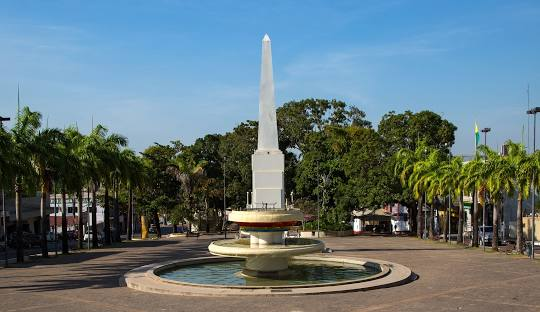

O Acre é um estado localizado na Região Norte do Brasil, fazendo fronteira com o Peru e a Bolívia. Conhecido por sua rica biodiversidade e vastas áreas de floresta amazônica, o estado tem economia baseada na extração de recursos naturais, como borracha, além da agricultura e pecuária. A capital, Rio Branco, é o principal centro urbano e comercial. O Acre também se destaca pela história da resistência seringueira e pela forte identidade cultural ligada à região amazônica.
 Voltar